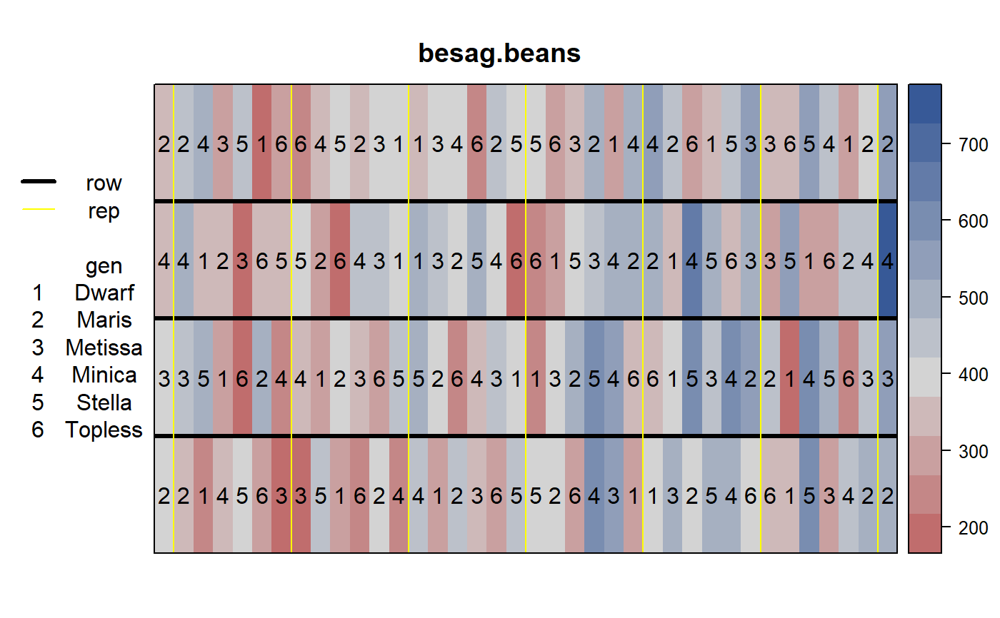
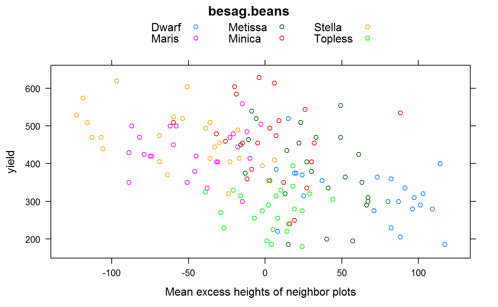

besag.beans.RdCompetition experiment in beans with height measurements
data("besag.beans")
A data frame with 152 observations on the following 6 variables.
gengenotype / variety
heightplot height, cm
yieldplot yield, g
rowrow / block
repreplicate factor
colcolumn
Field beans of regular height were grown beside shorter varieties. In each block, each variety occurred once as a left-side neighbor and once as a right-side neighbor of every variety (including itself). Border plots were placed at the ends of each block. Each block with 38 adjacent plots. Each plot was one row, 3 meters long with 50 cm spacing between rows. No gaps between plots. Spacing between plants was 6.7 cm. Four blocks (rows) were used, each with six replicates.
Plot yield and height was recorded.
Kempton and Lockwood used models that adjusted yield according to the difference in height of neighboring plots.
Field length: 4 plots * 3m = 12m
Field width: 38 plots * 0.5 m = 19m
Julian Besag and Rob Kempton (1986). Statistical Analysis of Field Experiments Using Neighbouring Plots. Biometrics, 42, 231-251. Table 6. http://doi.org/10.2307/2531047
Kempton, RA and Lockwood, G. (1984). Inter-plot competition in variety trials of field beans (Vicia faba L.). The Journal of Agricultural Science, 103, 293--302.
library(agridat) data(besag.beans) dat = besag.beans libs(desplot) desplot(yield ~ col*row, data=dat, aspect=12/19, out1=row, out2=rep, num=gen, cex=1, # true aspect main="besag.beans")libs(reshape2) # Add a covariate = excess height of neighbors mat <- acast(dat, row~col, value.var='height') mat2 <- matrix(NA, nrow=4, ncol=38) mat2[,2:37] <- (mat[,1:36] + mat[,3:38] - 2*mat[,2:37]) dat2 <- melt(mat2) colnames(dat2) <- c('row','col','cov') dat <- merge(dat, dat2) # Drop border plots dat <- subset(dat, rep != 'R0') libs(lattice) # Plot yield vs neighbors height advantage xyplot(yield~cov, data=dat, group=gen, main="besag.beans", xlab="Mean excess heights of neighbor plots", auto.key=list(columns=3))#> [1] 390.9722# Mean excess height of neighbors for each genotype # tapply(dat$cov, dat$gen, mean)/2 # Matches Kempton table 4 # Variety means, matches Kempton table 4 mean yield m1 <- lm(yield ~ -1 + gen, dat) coef(m1)#> genDwarf genMaris genMetissa genMinica genStella genTopless #> 318.7500 434.1667 387.7083 456.2500 469.5833 279.3750# Full model used by Kempton, eqn 5. Not perfectly clear. # Appears to include rep term, perhaps within block dat$blk <- factor(dat$row) dat$blkrep <- factor(paste(dat$blk, dat$rep)) m2 <- lm(yield ~ -1 + gen + blkrep + cov, data=dat) coef(m2) # slope 'cov' = -.72, while Kempton says -.79#> genDwarf genMaris genMetissa genMinica genStella genTopless #> 271.9249148 304.9869194 314.3474168 362.8740025 331.7998182 186.9650396 #> blkrep1 R2 blkrep1 R3 blkrep1 R4 blkrep1 R5 blkrep1 R6 blkrep2 R1 #> 9.6257870 90.1207546 130.3503148 153.5628935 133.5867917 74.2635231 #> blkrep2 R2 blkrep2 R3 blkrep2 R4 blkrep2 R5 blkrep2 R6 blkrep3 R1 #> 61.9201251 92.8503148 134.6257870 188.8163519 98.6716990 44.1666667 #> blkrep3 R2 blkrep3 R3 blkrep3 R4 blkrep3 R5 blkrep3 R6 blkrep4 R1 #> 69.0339629 119.5169815 94.8792454 165.7974860 89.6616343 74.3962268 #> blkrep4 R2 blkrep4 R3 blkrep4 R4 blkrep4 R5 blkrep4 R6 cov #> 53.5509444 71.5578612 96.0150970 152.1855326 93.3094351 -0.7245278